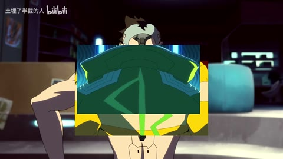
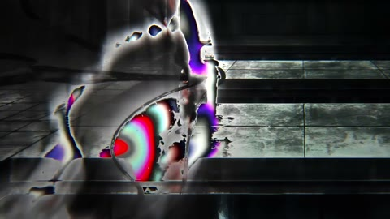
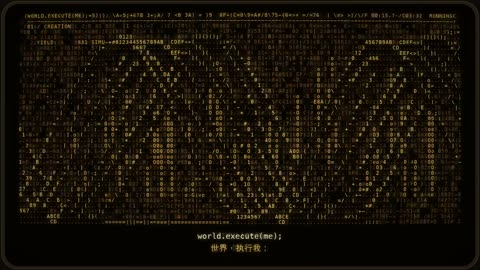

H03 / 16—24秒
崩 溃 边 缘
眼睛与人物/机甲局部在矩形区域中叠压原背景；20秒和24秒抽帧可见多层矩形错位拼接。
迁移提问：观众能指出谁在攻击、朝哪边、是否击中吗？哪些是原素材的动作，哪些才是新增剪接或合成？
手法专题 / 规则、用途与取舍
把短暂破坏作为失控、断裂、冲突或数字材质的提示。
赛博题材、记忆中断、身份不稳、高潮强调；也可短时掩护连接。
全程持续导致麻木；色散让脸和字长期看不清；把所有亮度变化算成切镜。
①先有可读稳定态；②选一处破坏理由；③通道偏移/横条限定短时窗；④保留最重要轮廓；⑤恢复稳定态形成对比。
规则通道与切片易；精确材质重建不保证一键。
基础机制已做13项原创演示，不等于本页所有复杂组合均已成片验证。
原机制演示 →
H03 / 16—24秒
眼睛与人物/机甲局部在矩形区域中叠压原背景；20秒和24秒抽帧可见多层矩形错位拼接。
迁移提问：观众能指出谁在攻击、朝哪边、是否击中吗？哪些是原素材的动作，哪些才是新增剪接或合成？


AI03 / 8—24秒
字符格点与大型点阵标题组织画面，文字同时具有信息和材质两种用途。
迁移提问：此刻观众必须读懂哪一条信息？如果所有界面都在动，谁仍然是主角？
H32 / 125.1—127.035秒
手部画面125.567秒变黑白并被弯曲条纹扭动，125.700–125.767秒黑场；125.834秒为另一手势，先黑白后恢复颜色。126.101–126.167秒再次黑场后126.234秒变为双人中景；127.035秒同一双人构图变黑白条纹。黑白/恢复色彩和条纹不各算新镜头。
迁移提问：前景、中景、背景分别是什么？如果镜头移动，原图未画出的部分由谁补齐？
H30 / 86—88秒
手部画面被横向块状拉开；86.75秒及87.083秒黑闪；纸片字幕被放大撕裂，87.833秒落到黑底嵌套矩形字卡。
迁移提问：前景、中景、背景分别是什么？如果镜头移动，原图未画出的部分由谁补齐？
同一镜只在转折前后加0.15秒故障；比较持续2秒的版本，记录信息损失。
交付时保留基础版与加效果版，并写“增加了什么意义、损失了什么清晰度”。
使用观察与复盘表 →